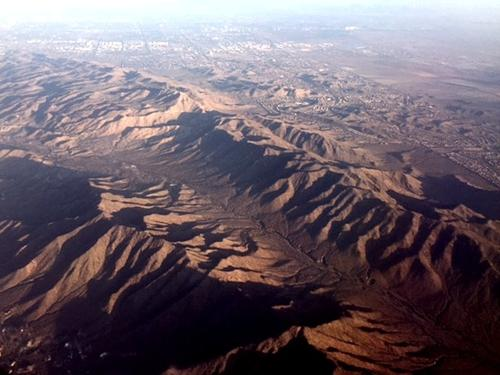
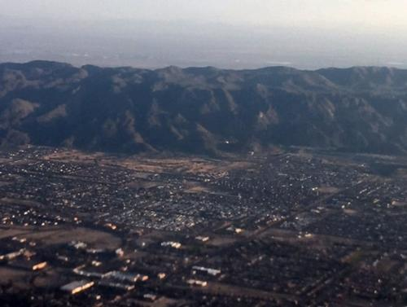
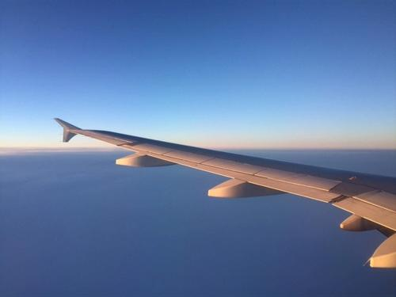
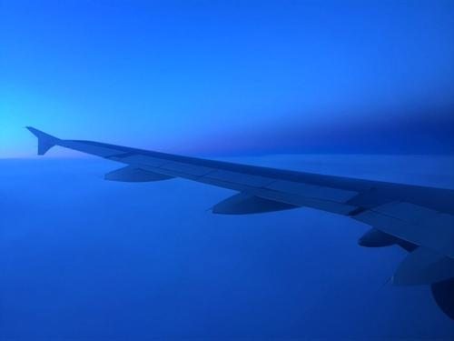
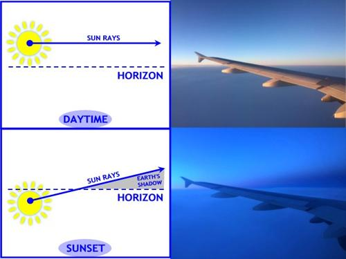
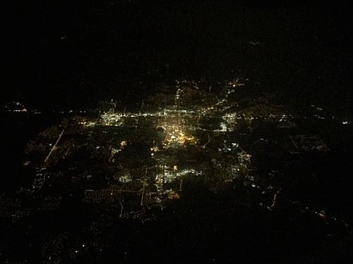

I recently took a trip to Arizona for work. I was excited since I had never been to the Southwest before. Well, I went to Dallas once but I don't count that since it didn't 'feel' like the Southwest in my mind. This time was different because I actually saw cacti and deserts, mountains and canyons — the stuff of the Southwest. Granted, I didn't get the full experience I wanted (I was working most of the time), but I got some great views from the plane at least.
The flight down was great; it was clear most of the way there and I got some amazing views of vast canyons which looked like they were taken right out of the movies — the real deal type of stuff. Unfortunately, you're just going to have to take my word for it since I wasn't able to get any pictures. The flight home wasn't quite as good since it was cloudy most of the way, but luckily I was able to snap a few photographs out of the window with my phone.

I thought this first photo was cool because of the apparent "tilt shift" effect — this was an actual effect captured in the picture, not added later. But more than that, I love the dynamic between the size of the houses and the mountains in the background. I love the difference of what we humans think of as grand, such as our structures and buildings, compared to the world as a whole which is just on a totally different level of "grand."

The same goes for this second picture. Notice the intricate details of the mountains with the stream flowing between them… then notice the 'light dusting' of civilization off in the distance. Whenever I see vistas like these I think of a time before modern civilization, a time before roads and airplanes and air-conditioned cars when real cowboys and Indians and prospectors roamed these vast landscapes. That romantic idea of 'simpler times' is sometimes very alluring to me.
Then came the clouds and I thought all my viewing pleasure was spent… But as the sun set, the crystal clear pureness of the sky and the complementary uniformity of the clouds below comprised a perfect backdrop to the expertly engineered, elegant wing, giving the entire scene an ultra-modern-artwork look to it. These images are not altered in any way and in fact, the scene looked even more magnificent in real life.


The sun started to set and I noticed something a little peculiar — a strange triangular shadow near the horizon to the east. Now, I could be wrong about this, but I'm almost positive that triangular shadow is the very shadow of the Earth itself. Seeing the Earth's shadow isn't that uncommon… every time you watch a lunar eclipse you're seeing the shadow of the Earth projected onto the moon. But to see it that close up from this perspective was very moving… intimate even.

It's really nice to have a change of perspective every once in a while, mix things up, get a different outlook… It helps me appreciate the situation I'm in and at the same time, reminds me that there's a limitless amount of beauty and things to learn in this fantastic universe of ours. Even when you think you've seen it all, you merely need to change your perspective on something to understand it from an entirely new angle.
This last picture is my favorite even though it's probably the worst looking one of the bunch. It's my favorite not because of how it looks but what it represents. Unfortunately, I wasn't able to capture the actual scene because I didn't have the equipment available, so let me paint you a picture…
It's nighttime on Earth. I'm now fully engrossed in the shadow of the Earth. I'm flying miles above the planet, somewhere over North America — who knows where. We emerge from the clouds and sprawled out before me is a neural-network of white and yellow lights branching off into the distance over the inky-black globe. I'm enthralled with the detail and supremely delicate web that is Human Civilization itself. There are brightly lit cities — oases — that randomly dot the black abyss, with tiny ants made of light marching in lines as the connective tissue between them. Each of those ants — each of those lives — are a single 'thought' briefly firing between neurons and will be gone before they realize. I imagine the millions of lives playing out silently below me completely unaware of the… angel?… ghost?… spirit?… soul… flying over them. If only for a moment, I knew what it was like for a god to look down on creation.

But then my eyes move far off to the horizon where this cerebral civilization arches off into oblivion and I catch a glimpse of… another web? I'm unable to discern ground from sky as the inky void below merges seamlessly into the cold, black sky above. The web above isn't drastically different than the web below. In fact, it's strikingly similar complete with its own twinkling lights and interstellar highways. The comparison between the life below and the infinite possibility of life above is inescapable. If life is teeming mere miles below, what galactic civilizations are playing out in the glitter-sea of stars above? Amazing. Speechless. Humbled…
Instantly I'm slammed back down to Earth, grounded with the realization that I never was a god in that fleeting instant… I was only a being… a single being — one of billions and billions — on this tiny mote of dust we call Earth, trying to make the most of the blink of an eye we consider a Life. Am I insignificant? Sure… Am I uniquely special? Absolutely. There will only be one of 'me' for all eternity. But the opportunity to understand the Universe is the fundamental reason it is better to be born than to not exist at all.
It's all about perspective, friends. All about perspective…
"Oh my Jeffrey — thank you for taking the time to explain and help me see what you have captured in photos of the 'wonderfulness' of our world. I too have felt the strange pull of the universe when flying and looking down at our small planet from the sky and realizing that we are all part of a silent, beautiful, peaceful place that we are only temporary travelers in. It's a wonderful thing, isn't it? Love you."
— Aunt Deb